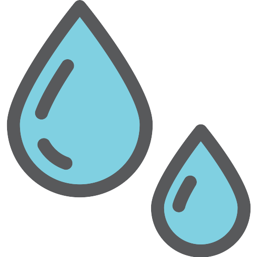
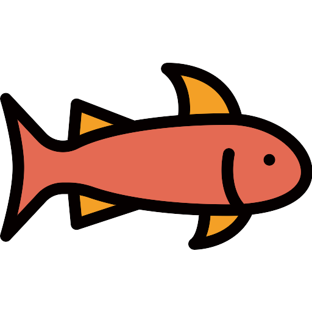

Técnicas de Plantio Agrícola: Um Guia Detalhado para Otimização da Produtividade
O Plantio Agrícola, a arte de cultivar alimentos e produtos na terra, engloba um conjunto de técnicas que visam otimizar a produção, garantir a qualidade dos produtos e promover a sustentabilidade ambiental. Cada técnica possui características, vantagens e aplicações específicas, exigindo do agricultor conhecimento, experiência e adaptabilidade às diferentes condições climáticas e edáficas.
Plantio Convencional
O plantio convencional, também conhecido como agricultura tradicional, é o método de produção agrícola mais utilizado no mundo, caracterizado pelo uso intensivo de tecnologias modernas e insumos químicos, como agrotóxicos e fertilizantes sintéticos. Essa prática, que teve início no século XX, impulsionou a produtividade agrícola em larga escala, contribuindo para a alimentação da população mundial.
Como funciona?
É baseado em técnicas mecanizadas para o preparo do solo, o plantio, a colheita e o beneficiamento dos produtos, além do uso de insumos químicos para controlar pragas, doenças e ervas daninhas, e para aumentar a fertilidade do solo. As características principais do plantio convencional incluem:
-
Monocultura
O cultivo de uma única espécie vegetal em grandes extensões, otimizando o uso de máquinas e equipamentos e facilitando o controle de pragas e doenças. -
Mecanização
O uso de máquinas agrícolas para todas as etapas do processo, desde o preparo do solo até a colheita, reduzindo a necessidade de mão de obra e aumentando a eficiência da produção. -
Agrotóxicos
A aplicação de pesticidas químicos para controlar pragas e doenças, protegendo as plantações e aumentando a produtividade. -
Fertilizantes sintéticos
A adição de fertilizantes químicos ao solo para fornecer nutrientes às plantas, aumentando a fertilidade do solo e a produtividade das culturas.
Vantagens e desvantagens
-
Alta produtividade
Permite a produção de grandes quantidades de alimentos em um curto período de tempo, atendendo à demanda crescente da população mundial. -
Baixo custo de produção
O uso de máquinas agrícolas e insumos químicos reduz os custos de produção, tornando os alimentos mais acessíveis aos consumidores. -
Controle de pragas e doenças
Os agrotóxicos garantem o controle eficiente de pragas e doenças, protegendo as plantações e aumentando a produtividade. -
Aumento da vida útil dos alimentos
O uso de conservantes e técnicas de pós-colheita aumenta a vida útil dos alimentos, reduzindo o desperdício.
Vantagens
-
Impacto ambiental
O uso intensivo de agrotóxicos e fertilizantes sintéticos contamina o solo e a água, prejudica a biodiversidade e pode causar problemas de saúde humana. -
Degradação do solo
O manejo inadequado do solo, como a monocultura e o uso excessivo de agrotóxicos, degrada a qualidade do solo, reduzindo sua fertilidade e capacidade produtiva. -
Perda de biodiversidade:
A monocultura e o uso de agrotóxicos reduzem a biodiversidade no campo, prejudicando o equilíbrio ecológico e a saúde do solo. -
Dependência de insumos externos:
O plantio convencional depende fortemente de insumos externos, como agrotóxicos e fertilizantes sintéticos, tornando os agricultores mais vulneráveis às oscilações de preços no mercado.
Desvantagens
Plantio Direto: Agricultura Conservacionista para o Futuro
Em um mundo cada vez mais consciente da importância da sustentabilidade e da preservação do meio ambiente, o plantio direto surge como uma alternativa inovadora e promissora para a produção de alimentos. Essa prática, que se consolida a cada dia no campo brasileiro, busca restaurar a saúde do solo, aumentar a produtividade e reduzir o impacto ambiental da atividade agrícola.
Como funciona?
Imagine um campo coberto por palha, restos de culturas anteriores que protegem o solo da erosão e da perda de umidade. Nesse cenário ideal, as sementes são plantadas diretamente na palha, sem a necessidade de revolvimento do solo.
-
Melhora da Estrutura do Solo:
A palha atua como uma manta protetora, reduzindo a erosão, aumentando a infiltração de água e promovendo a atividade biológica do solo, resultando em um solo mais fértil e produtivo. -
Redução da Compactação do Solo:
A diminuição do número de passadas de máquinas agrícolas no campo evita a compactação do solo, facilitando o crescimento das raízes das plantas e a absorção de água e nutrientes. -
Aumento da Retenção de Umidade:
A palha retém a umidade do solo, reduzindo a necessidade de irrigação e otimizando o uso da água, especialmente em regiões áridas ou semiáridas. -
Controle da Erosão:
A cobertura do solo com palha minimiza o impacto das chuvas e ventos, diminuindo significativamente a erosão hídrica e eólica, protegendo o solo e preservando a produtividade a longo prazo. -
Sequestro de Carbono:
A palha contribui para o sequestro de carbono no solo, mitigando os efeitos das mudanças climáticas e promovendo a sustentabilidade ambiental.

Agricultura Orgânica: Cultivo em Harmonia com a Natureza
Essa prática milenar, revitalizada e aperfeiçoada nos últimos tempos, baseia-se em princípios ecológicos e na busca por um equilíbrio harmonioso entre o homem e a natureza.
Como funciona?
Em resumo, ela se caracteriza pela ausência de agrotóxicos sintéticos e fertilizantes químicos, priorizando métodos naturais para nutrir o solo, controlar pragas e doenças, e promover a biodiversidade. A agricultura orgânica busca restaurar e manter a saúde do solo, utilizando técnicas como:
-
Compostagem
Transforma restos de alimentos e outros materiais orgânicos em um adubo rico em nutrientes, nutrindo o solo e aumentando sua fertilidade natural. -
Rotação de culturas
Cultiva diferentes tipos de plantas em um mesmo local ao longo do tempo, evitando o esgotamento dos nutrientes do solo e reduzindo a proliferação de pragas e doenças. -
Controle biológico de pragas e doenças
Utiliza inimigos naturais, como insetos e microrganismos benéficos, para combater pragas e doenças, evitando a aplicação de produtos químicos nocivos. -
Cobertura vegetal
Cobre o solo com plantas rasteiras, como leguminosas e gramíneas, para proteger o solo da erosão, conservar a umidade e suprimir o crescimento de ervas daninhas.
Vantagens e desvantagens
-
Alimentos mais saudáveis
A agricultura orgânica produz alimentos livres de resíduos de agrotóxicos e fertilizantes químicos, resultando em produtos mais nutritivos e com sabor autêntico. -
Solo mais saudável
As técnicas utilizadas na agricultura orgânica promovem a saúde do solo, aumentando sua fertilidade, retenção de água e capacidade de armazenar carbono. -
Biodiversidade preservada
A agricultura orgânica incentiva a biodiversidade no campo, atraindo polinizadores, insetos benéficos e outros organismos que contribuem para o equilíbrio do ecossistema. -
Impacto ambiental reduzido
A ausência de agrotóxicos e a preservação do solo diminuem significativamente o impacto ambiental da atividade agrícola, contribuindo para a sustentabilidade do planeta.
Vantagens
-
Produtividade
A produtividade das culturas orgânicas pode ser menor do que na agricultura convencional, exigindo um planejamento cuidadoso e técnicas específicas de manejo. -
Mercado
O mercado de produtos orgânicos ainda é relativamente pequeno, necessitando de investimentos em marketing e logística para alcançar mais consumidores. -
Custo
Os produtos orgânicos podem ter um custo mais elevado para o consumidor final, devido aos custos de produção mais altos e à menor escala de produção.
Desvantagens

 Hidroponia: Cultivo sem Solo para Alta Produtividade
Essa técnica inovadora desafia os limites da agricultura tradicional, cultivando plantas sem a necessidade de solo, utilizando soluções nutritivas ricas em água e minerais.
Como funciona?
Imagine um sistema onde as raízes das plantas são banhadas em uma solução nutritiva rica em água, oxigênio e minerais essenciais para o seu crescimento. Essa é a essência da hidroponia: um cultivo sem solo que utiliza técnicas como:
-
NFT (Nutrient Film Technique)
As raízes das plantas crescem em canais rasos com um fluxo constante de solução nutritiva. -
DWC (Deep Water Culture)
As raízes das plantas ficam suspensas em baldes ou tanques com solução nutritiva aerada. -
Aeroponia
As raízes das plantas ficam suspensas no ar e são nebulizadas com solução nutritiva periodicamente.
Vantagens e desvantagens
-
Economia de água
A hidroponia utiliza até 90% menos água do que a agricultura tradicional, sendo ideal para regiões áridas ou com recursos hídricos limitados. -
Maior produtividade
As plantas cultivadas em hidroponia crescem mais rápido e produzem mais do que no solo, devido ao controle preciso da nutrição e do ambiente. -
Menor uso de agrotóxicos
O controle do ambiente e a ausência de solo reduzem a necessidade de agrotóxicos, resultando em alimentos mais saudáveis e seguros. -
Cultivo em qualquer lugar
A hidroponia pode ser cultivada em qualquer lugar, desde apartamentos até grandes áreas comerciais, independentemente do clima ou tipo de solo.
Vantagens
-
Custo inicial
A instalação de um sistema hidropônico pode ter um custo inicial elevado, devido aos equipamentos e insumos específicos. -
Mão de obra qualificada
A operação de um sistema hidropônico exige mão de obra qualificada com conhecimentos em nutrição vegetal, controle de pH e EC, e manejo de pragas e doenças. -
Risco de doenças
A água utilizada na hidroponia deve ser livre de patógenos, para evitar a proliferação de doenças nas plantas.
Desvantagens

 Aquaponia: Integração entre Aquicultura e Hidroponia
Essa técnica revolucionária combina a criação de peixes com o cultivo de plantas, utilizando os resíduos dos peixes como fertilizante natural para as plantas, criando um ciclo virtuoso e sustentável.
Como funciona?
Imagine um sistema onde os peixes nadam em um tanque, seus resíduos ricos em nutrientes são filtrados e bombeados para um outro tanque com plantas aquáticas. As plantas, por sua vez, absorvem os nutrientes da água e purificam-na, devolvendo-a limpa para os peixes. Essa é a essência da aquaponia: um sistema de cultivo integrado que utiliza os seguintes componentes:
-
Tanque de peixes
Onde os peixes são criados e seus resíduos são gerados. -
Biofiltro
Um sistema de filtragem natural que remove os resíduos sólidos da água e transforma-os em nutrientes para as plantas. -
Tanque de plantas
Onde as plantas aquáticas crescem e absorvem os nutrientes da água filtrada. -
Bombas
Responsáveis por recircular a água entre os tanques de peixes e de plantas.
Vantagens e desvantagens
-
Sustentabilidade
A aquaponia é um sistema fechado e sustentável, que não gera resíduos e utiliza os recursos de forma eficiente. -
Produtividade
As plantas cultivadas em aquaponia crescem mais rápido e produzem mais do que no solo tradicional, devido à alta disponibilidade de nutrientes. -
Alimentos frescos e saudáveis
Os peixes criados em aquaponia são mais saudáveis e livres de estresse, resultando em carne de alta qualidade. -
Cultibo em qualquer lugar
A aquaponia pode ser cultivada em qualquer lugar, desde apartamentos até grandes áreas comerciais, independentemente do clima ou tipo de solo.
Vantagens
-
Custo inicial
A instalação de um sistema de aquaponia pode ter um custo inicial elevado, devido aos equipamentos e insumos específicos. -
Mão de obra qualificada
A operação de um sistema de aquaponia exige mão de obra qualificada com conhecimentos em biologia aquática, manejo de peixes, nutrição vegetal e controle de pragas e doenças. -
Equilíbrio do sistema
O sistema de aquaponia precisa ser mantido em equilíbrio entre a população de peixes e as plantas, para garantir o bom funcionamento e a produtividade.
Desvantagens